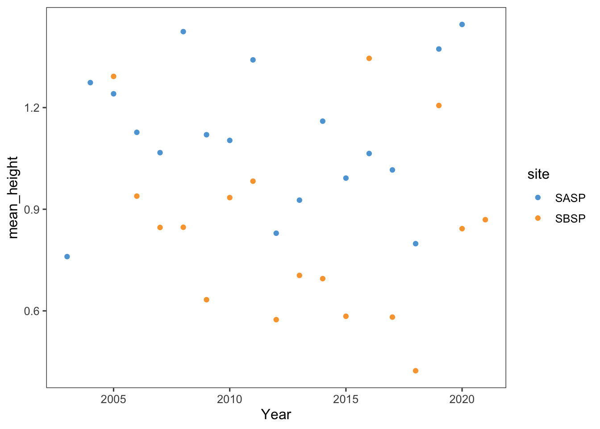

9 Simple web scraping
R can read html using either rvest, xml, or xml2 packages. Here we are going to navigate to the Center for Snow and Avalance Studies Website and read a table in. This table contains links to data we want to programatically download for three sites. We don’t know much about these sites, but they contain incredibly rich snow, temperature, and precipitation data.
9.1 Reading an html
9.1.1 Extract CSV links from webpage
site_url <- 'https://snowstudies.org/archived-data/'
#Read the web url
webpage <- read_html(site_url)
#See if we can extract tables and get the data that way
tables <- webpage %>%
html_nodes('table') %>%
magrittr::extract2(3) %>%
html_table(fill = TRUE)
#That didn't work, so let's try a different approach
#Extract only weblinks and then the URLs!
links <- webpage %>%
html_nodes('a') %>%
.[grepl('24hr',.)] %>%
html_attr('href')9.2 Data Download
9.2.1 Download data in a for loop
#Grab only the name of the file by splitting out on forward slashes
splits <- str_split_fixed(links,'/',8)
#Keep only the 8th column
dataset <- splits[,8]
#generate a file list for where the data goes
dir.create("data", showWarnings = FALSE)
file_names <- paste0('data/',dataset)
for(i in 1:3){
download.file(links[i],destfile=file_names[i])
}
downloaded <- file.exists(file_names)
evaluate <- !all(downloaded)9.3 Data read-in
9.3.1 Read in just the snow data as a loop
#Pattern matching to only keep certain files
snow_files <- file_names %>%
.[!grepl('SG_24',.)] %>%
.[!grepl('PTSP',.)]
#empty_data <- list()
# snow_data <- for(i in 1:length(snow_files)){
# empty_data[[i]] <- read_csv(snow_files[i]) %>%
# select(Year,DOY,Sno_Height_M)
# }
#snow_data_full <- do.call('rbind',empty_data)
#summary(snow_data_full)9.3.2 Read in the data as a map function
# define a function to read in list of csv files
our_snow_reader <- function(file){
name = str_split_fixed(file,'/',2)[,2] %>%
gsub('_24hr.csv','',.)
df <- read_csv(file) %>%
select(Year,DOY,Sno_Height_M) %>%
mutate(site = name)
}
# use map to call function defined above
snow_data_full <- map_dfr(snow_files,our_snow_reader)
summary(snow_data_full)9.3.3 Plot snow data
# summarize snow data by year
snow_yearly <- snow_data_full %>%
group_by(Year,site) %>%
summarize(mean_height = mean(Sno_Height_M,na.rm=T))
# plot snow data
ggplot(snow_yearly,aes(x=Year,y=mean_height,color=site)) +
geom_point() +
ggthemes::theme_few() +
ggthemes::scale_color_few()